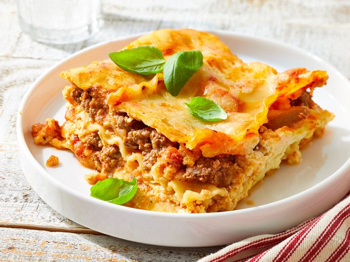

Lasagna

Description
This lasagna with uncooked noodles delivers all the cheesy payoff of the classic, using jarred sauce to soften the noodles right in the oven without an extra pot.
ingredients
Meat Sauce:
- 1lb lean ground beef
- 1 onion, chopped
- 1 can of munshrooms
- 1 jar of spaghetti sauce
Cheese filling:
- 16oz cottage Cheese
- 1 pint part-skim ricotta cheese
- 2 eggs
- 1/4 cup grated parmesan cheese
Other
- 1 package of lasagna noodles
- 8oz shredded mozarella cheese
steps
- Gather all ingredients, and preheat the oven to 350 degrees F (175 degrees C)
- Make sauce: Heat a large skillet over medium-high heat. Cook and stir ground beef in the hot skillet until browned and crumbly, 5 to 7 minutes. Add onion and mushrooms; sauté until onions are transparent. Stir in pasta sauce and cook until heated through. Set aside.
- Make filling: Combine cottage cheese, ricotta, eggs, and Parmesan in a medium bowl and set aside.
Table of Contents